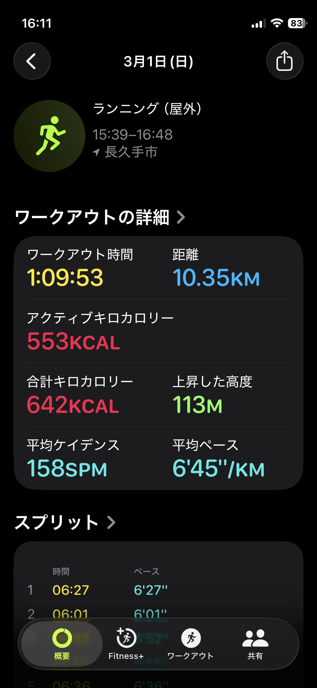
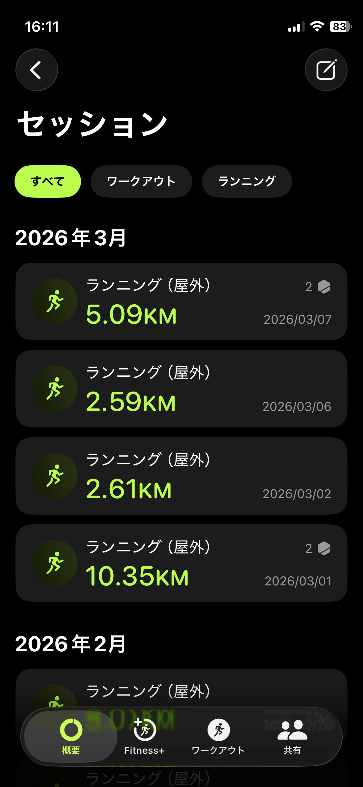
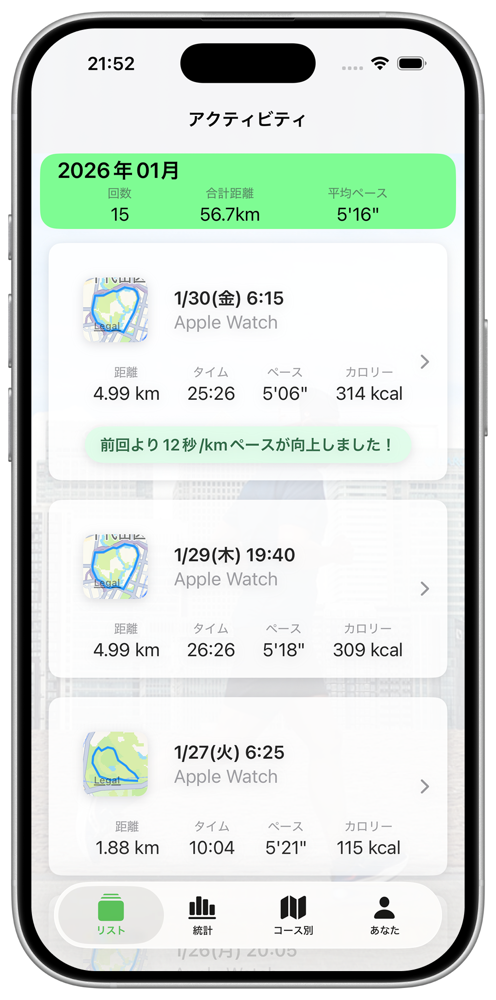
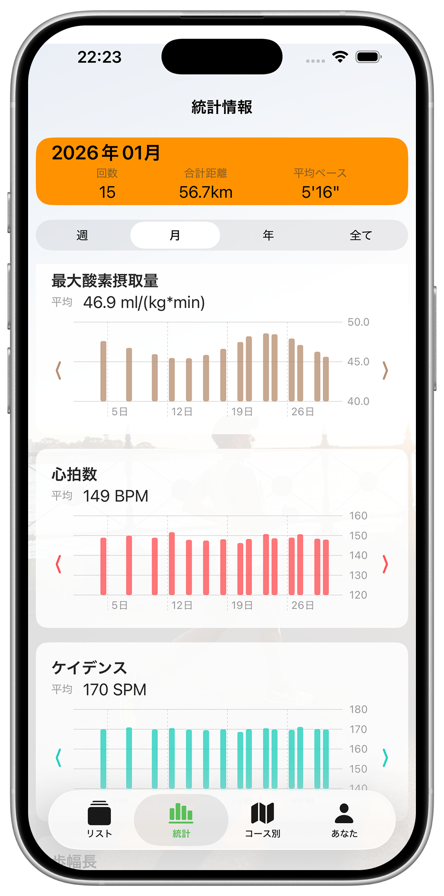
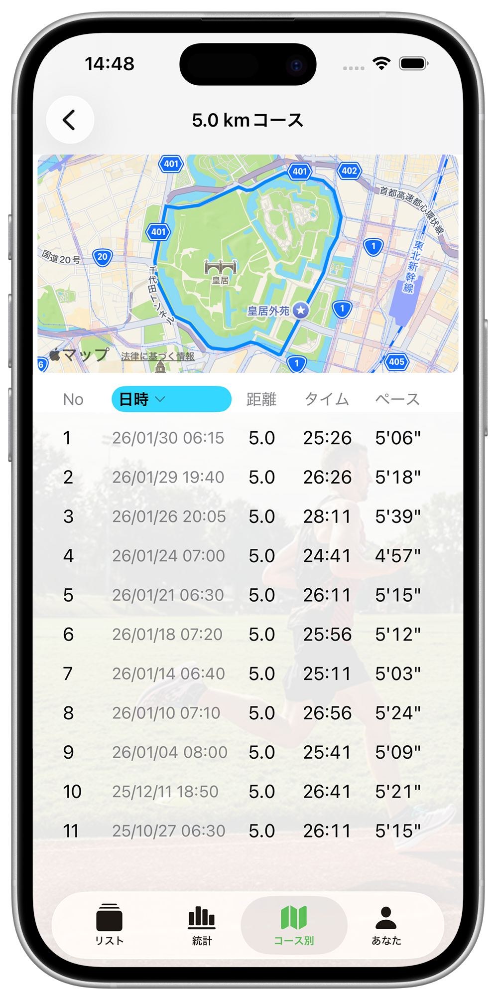

純正フィットネスアプリでラン記録を見ると、個別ランの結果は見やすいですが、ラン同士の比較がしにくいです。


Apple Watch の純正アプリは高機能で便利ですが、ラン記録は少し見づらいと感じませんか？
StackActは、ラン毎の変化を分かりやすく表示して、成長や頑張りを実感しやすくするアプリです。





App Storeレビューやメールにて、率直な感想をいただけると嬉しいです。
直接送る場合: kanare.tech@gmail.com